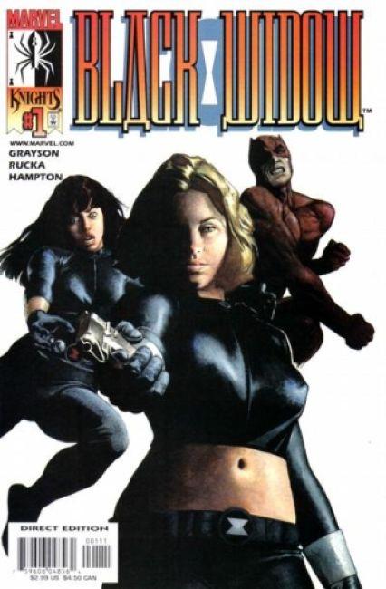
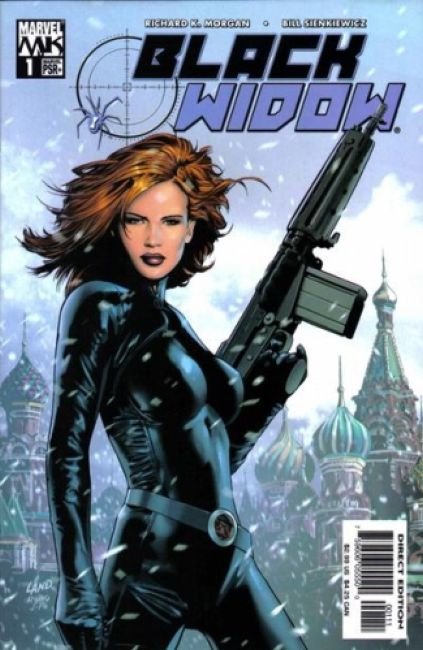
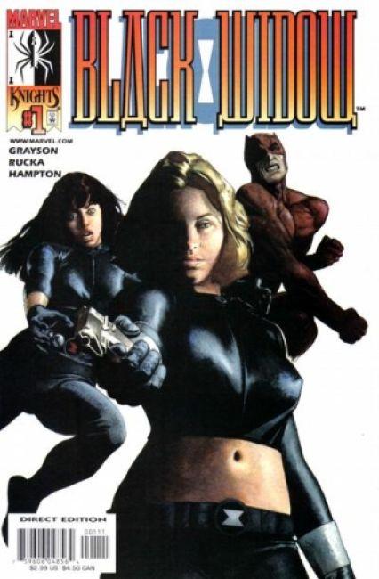
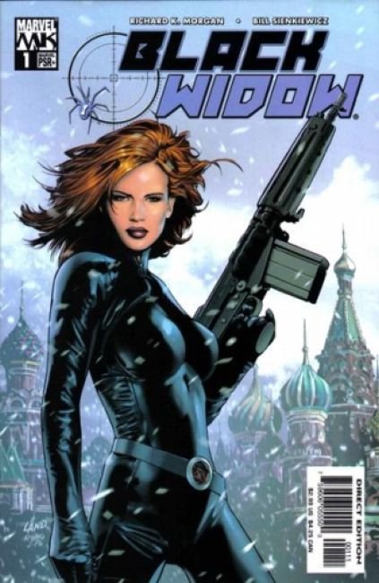
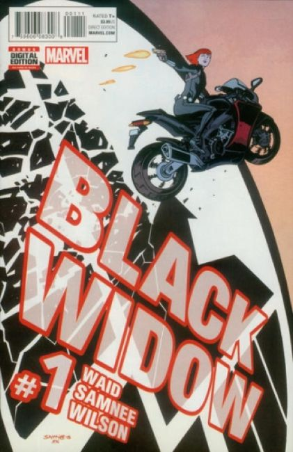
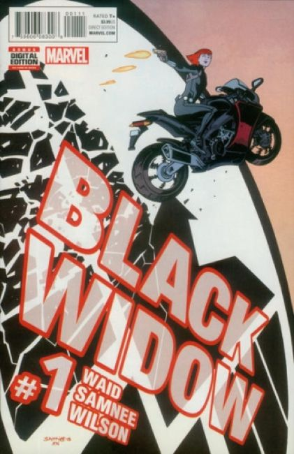

 
 1999 First Series:
THE TRANSMISSION: Data retrievement has uncovered the manufacture of an unstable variation of the "Super Soldier Serum" once used to empower Captain America. Satellite photographs locate chemical production facilities somewhere in the desert of Rhapistan.
THE PENTAGON ASSESSMENT: Definite involvement of hard-line KGB agents targeting acquisition of Serum. Request immediate reactivation of Natasha Romanova, former Avenger and one-time spy.
THE RISK FACTOR: New Black Widow Operative activated with priority one orders: terminate and replace Natasha Romanova. Written by Devin Grayson. Art and wraparound covers by J.G. Jones.
2001 Second Series:
Natasha Romanoff isn't ready to let go of her mantle of Black Widow, but is she willing to kill Yelena Belova to keep it? That's what Daredevil must figure out as Nick Fury and S.H.I.E.L.D. close in!
2004 Third Series:
The deadliest agent in the Marvel Universe has finally gotten out of the spy game, and she's not asking for much, just a life of her own. When a sudden assassination attempt provides a harsh reality check, the former Soviet agent tracks a string of international killings that will lead her back to a Russia she can barely recognize.
2005 Fourth Series:
Some say she's a traitor, some say she's a murderer...and what most say about her isn't even printable. But nobody denies that the former Cold War spy is a force to be reckoned with. The last man foolish enough to send killers after her paid the highest price, but his friends on Capitol Hill will ensure that Natasha doesn't get off easy...and not even Col. Nick Fury can protect her this time. Meanwhile, the survivors of Natasha's last tirade start coming back to haunt her...and they're starting to join forces. Also featuring a guest appearance by Daredevil!
2010 Fifth Series:
Natasha Romanoff is not a super hero. She's not psychic. She doesn't fly. And yet as the Black Widow, she manages to hold her own against a world of incredibly powerful enemies...and allies. But now someone has tried to kill Natasha...and almost succeeded. Injured gravely, almost beyond her ability to recover, Black Widow sets out to find her attacker...with no suspects and no leads. Who could be deadly enough to get the drop on Natasha? And what connections do they have to some of her closest super hero friends...? Plus, a backup detailing the deadly history of the Black Widow!
2014 Sixth Series:
You've seen Black Widow as an Avenger and even an Agent of Shield. But on her own time she searches for atonement for her past as a KGB assassin-in ways of which those teams just wouldn't approve.
2016 Seventh Series:
Natasha has spent years gathering secrets, and when some of the darkest ones begin mysteriously going public, no one is safe. With her betrayed former confederates at S.H.I.E.L.D. on her heels and a lifetime of training and ingenuity at her disposal, Natasha's out for answers in a knock-down-drag-out tale of action and espionage! Hidden enemies, old friends and unusual allies collide, and all eyes are on Black Widow. The chase is on!